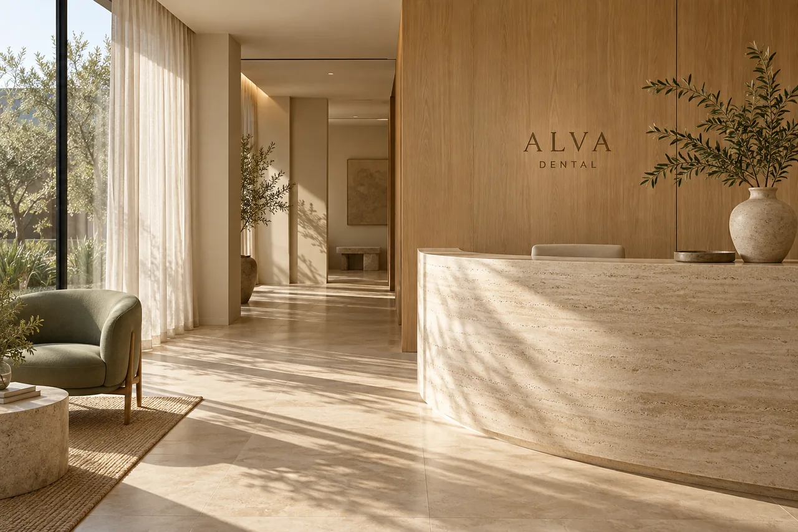
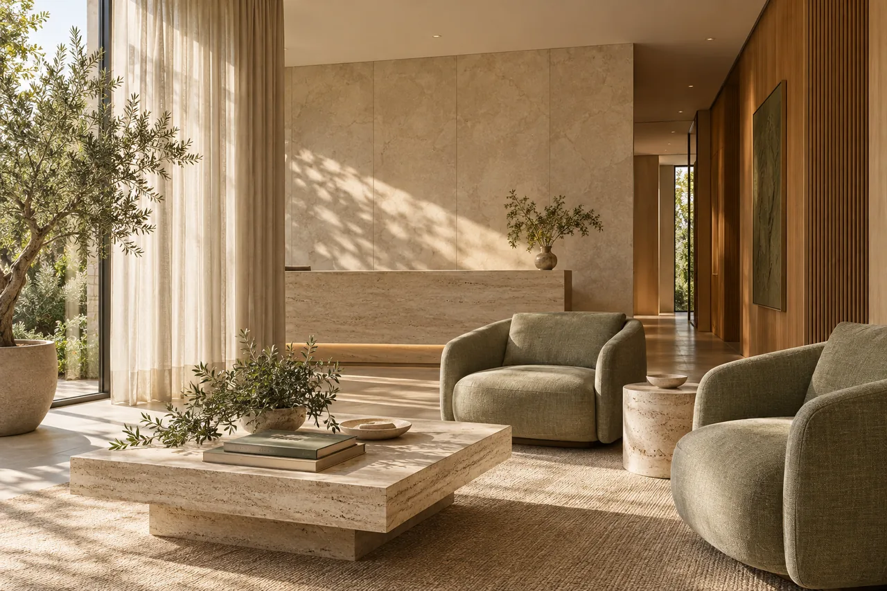
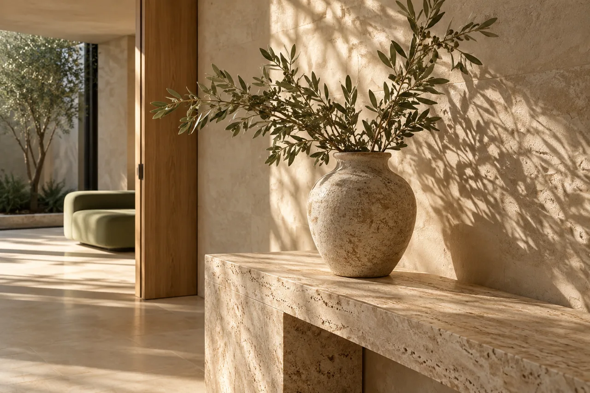
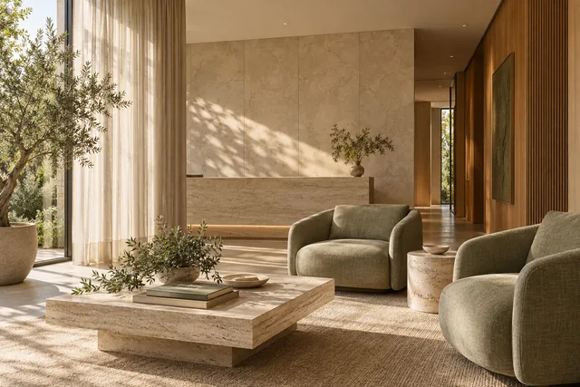
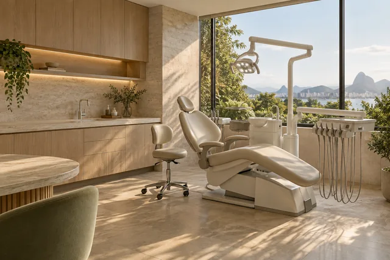
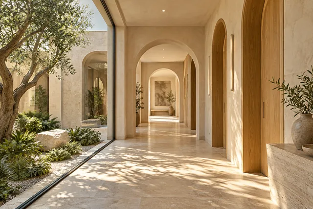
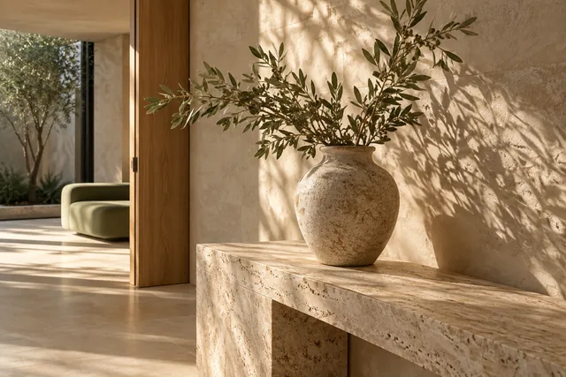
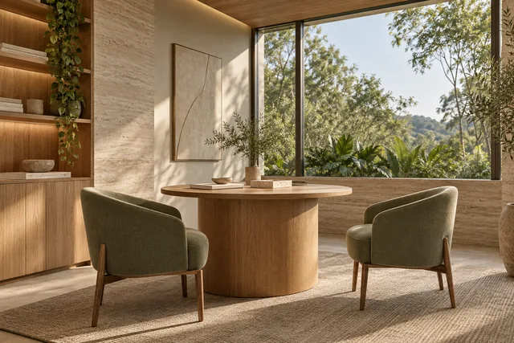

01
Clínica geral
Consultas de avaliação, orientações e acompanhamento da saúde bucal.
ODONTOLOGIA CONTEMPORÂNEA · SÃO JOSÉ DO RIO PRETO
Um espaço pensado para acolher, orientar e cuidar da sua saúde bucal com atenção a cada detalhe.
Acolhimento em cada detalhe.


ARQUITETURA QUE ACOLHE01 / NOSSA ESSÊNCIA
Acreditamos que cada pessoa tem uma história, necessidades e expectativas diferentes. Por isso, nossa proposta de atendimento começa com uma conversa atenta e informações claras.
Na ALVA, imaginamos uma experiência odontológica que valoriza o acolhimento, o respeito e a individualidade.
Compreender suas necessidades é o primeiro passo.
Informações acessíveis para decisões conscientes.
Atenção à experiência em cada etapa.
02 / ÁREAS DE CUIDADO
Conheça algumas áreas da odontologia e entenda como cada uma pode contribuir para o acompanhamento da sua saúde bucal.
Consultas de avaliação, orientações e acompanhamento da saúde bucal.
Cuidados e orientações voltados à prevenção e à manutenção da saúde bucal.
Avaliação e acompanhamento de questões relacionadas ao posicionamento dos dentes e à oclusão.
Informações e avaliação individualizada sobre possibilidades de cuidado com a aparência do sorriso.
Cuidados relacionados à saúde da gengiva e dos tecidos de suporte dos dentes.
Avaliação de necessidades relacionadas à função e à recuperação de estruturas dentárias.
Cada pessoa é única. A indicação de qualquer cuidado depende de avaliação profissional.
03 / NOSSA EXPERIÊNCIA
Ambientes tranquilos, comunicação acolhedora e uma jornada organizada fazem parte da experiência que imaginamos para a ALVA.
Espaços concebidos para transmitir tranquilidade e conforto.
Informações apresentadas de forma simples, respeitando dúvidas e necessidades.
Uma proposta de cuidado que reconhece a singularidade de cada pessoa.
04 / SUA JORNADA
Você compartilha o motivo do contato e suas preferências.
São apresentadas informações sobre os próximos passos e possibilidades de atendimento.
Quando aplicável, um profissional habilitado realiza a avaliação necessária.
Os cuidados e orientações são definidos conforme a avaliação individual.
A PESSOA ANTES DE TUDO
Para nós, uma experiência de cuidado começa pelo respeito a quem está do outro lado.

05 / O AMBIENTE
Conheça a proposta visual dos ambientes imaginados para a ALVA: arquitetura contemporânea, luz natural e uma atmosfera acolhedora.

02 / Sala de espera ↗
03 / Consultório ↗
04 / Corredor ↗
05 / Detalhes arquitetônicos ↗
06 / Ambiente de atendimento ↗Imagens ilustrativas de referência arquitetônica. A ALVA DENTAL é um projeto fictício. Ambientes gerados por IA.
06 / PRIMEIRO CONTATO
Conte um pouco sobre o atendimento que procura e escolha suas preferências. Esta é uma demonstração de como funcionaria uma solicitação de agendamento.
Um convite para experimentar.
Modo demonstração. Nenhuma reserva é realizada e nenhuma informação é enviada.
Ative o JavaScript para experimentar o agendamento demonstrativo. Este site não realiza agendamentos reais.
07 / DÚVIDAS FREQUENTES
Clareza para dar o primeiro passo, no seu tempo.
Em geral, a primeira consulta envolve uma conversa sobre suas necessidades e uma avaliação realizada por profissional habilitado. As etapas específicas dependem do caso e do serviço.
Não necessariamente. Uma avaliação inicial pode ajudar a identificar quais cuidados ou encaminhamentos são adequados.
A duração varia conforme o tipo de consulta, a avaliação necessária e as particularidades de cada caso.
Na demonstração deste site, você pode informar uma preferência. Isso não representa disponibilidade ou confirmação de horário.
Não. A indicação de qualquer procedimento depende de avaliação individualizada por profissional habilitado.
Não. A ALVA DENTAL é uma clínica fictícia criada para portfólio. Este formulário demonstra a experiência de solicitação, mas não realiza agendamentos.
COM CALMA. COM CLAREZA. COM CUIDADO.
Conheça uma forma mais acolhedora de iniciar sua jornada de cuidado.